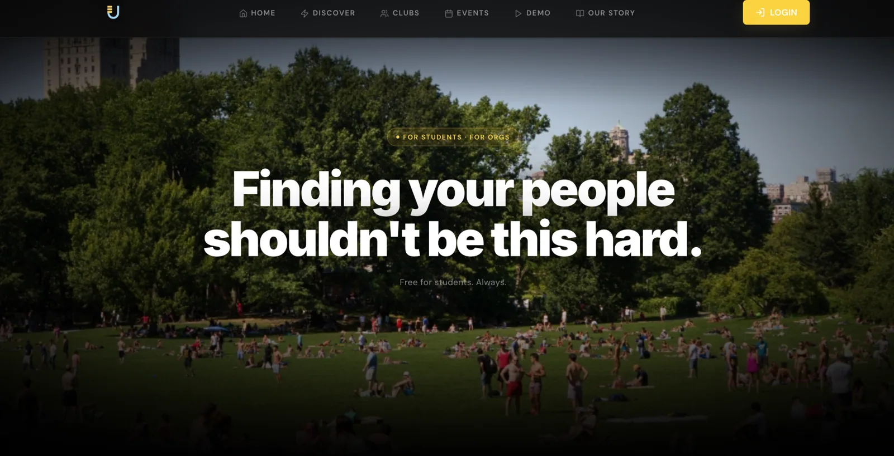
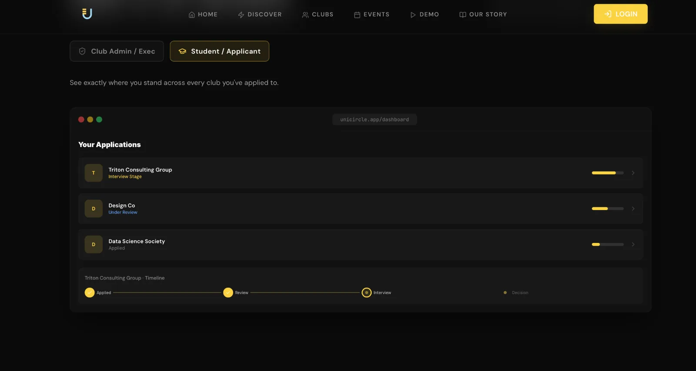
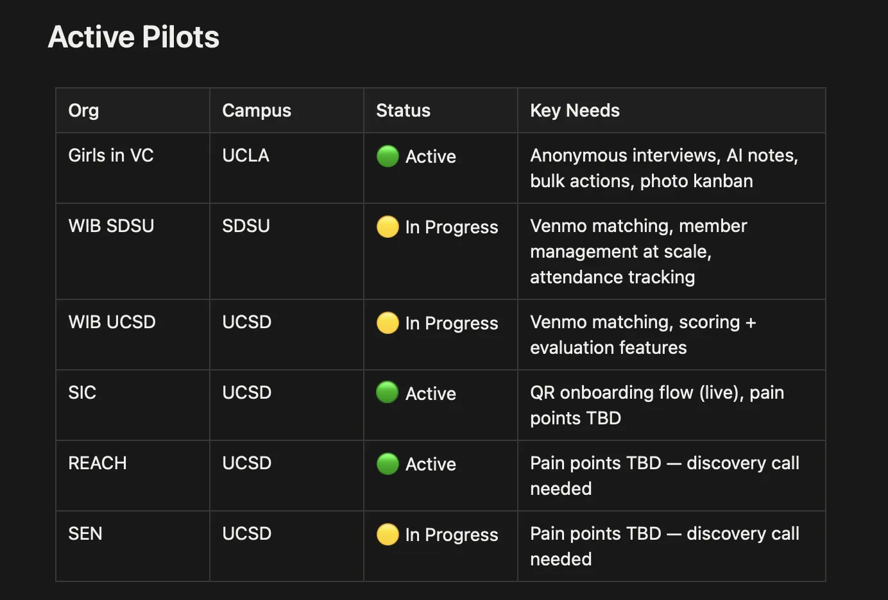
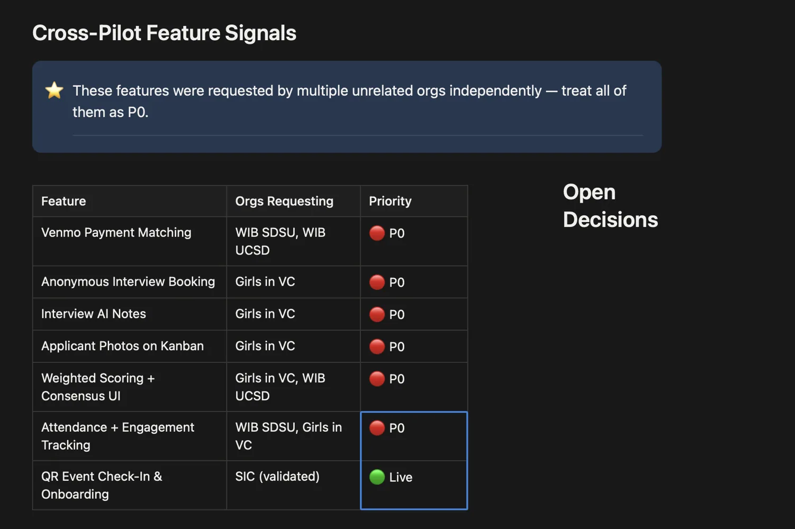

Finding your people shouldn't be this hard.
I started Unicircle after struggling to discover campus communities as a transfer student. It grew into a two-sided recruitment platform—and taught me the difference between building a product and building a viable business.
0→1 productFull-stackCustomer discovery
A problem I experienced
As a commuter transfer student, I struggled to learn about clubs and events before they happened. I wanted the community discovery experience to feel intentional, not like luck.
Building the first directory led me to another problem: student organizations were managing recruitment through disconnected forms, spreadsheets, and group chats.
Two different users. One connected system.
Explore representative screenshots of the student and organization experiences I built. The interface shown uses example data.

Students track club applications and stages in one place.
Built independently, end to end
React + TypeScript + Vite frontend hosted on Vercel. Supabase handles identity, core data, external clubs/events data, and Edge Functions for server-side notifications, AI screening, and résumé parsing.
Vercel SPA
Auth · Profiles · Applicants · Recruitment
Clubs · Events
Notifications · AI workflows · Parsing
Applicant table Realtime subscriptions supported Kanban updates without manual refresh.
Listening across campus lines
I personally conducted discovery meetings with six organizations across three campuses and created a prioritized backlog from their workflows. Needs included weighted applicant evaluation, anonymous interview scheduling, attendance tracking, and payment matching.

Historical pilot tracker: three labeled Active, three In Progress—not a measure of retained usage.

P0 requests indicate priority, not release status. QR check-in was explicitly marked live.
Getting used isn’t the same as being relied on.
A historical snapshot showed a gap between organizations receiving applications and organizations working through them in Unicircle.
Organization counts from a historical snapshot. The six pilots are a separate group, not a further step after the 58 and 21. I haven’t confirmed that the 58 and 21 use the same cohort definition, so I don’t state a conversion rate.
Receiving applications showed that students could find a club. Reviewing candidates showed that a club was actually using Unicircle to recruit. The second step is what activation meant for this product, and far fewer organizations reached it.
Beyond shipping features
Built onboarding checklists, tabling playbooks, club approval and claiming workflows, and campus expansion criteria. My expansion gate included a target of ten active clubs, feedback collection, documented onboarding, and repeatable outreach—not a claim that all targets were met.
Knowing when not to keep building.
Unicircle was technically buildable, but growth was more complicated. Recruitment workflows varied widely, user onboarding was difficult, and the market was crowded. I chose to stop pursuing it as a standalone commercial venture. I learned that product-market fit, distribution, and support complexity matter just as much as the software itself.